01Contexte et rôle
Lors d'Infra-Site, nous avions ajouté une DMZ et une zone Internet au réseau de RIOCA. ArchiSite y installe le site de l'entreprise, accessible par le nom www.rioca-corp.com et réservé aux salariés. Le site et sa base de données sont écrits par des étudiants de l'option SLAM, qui jouent l'équipe de développement.
La lettre de mission impose :
- un serveur Linux, avec un serveur web sécurisé (HTTPS) qui exécute des pages PHP, une base de données et un serveur FTPS ;
- la répartition de ces services entre les zones du réseau selon les recommandations de l'ANSSI ;
- un certificat géré par l'équipe pour authentifier le serveur, et des échanges qui ne peuvent pas être interceptés ;
- la communication des accès aux développeurs avant la date de mise en production ;
- des fichiers de configuration commentés, un rapport de tests et une fiche de configuration.
Le travail s'est fait en binôme, avec un diagramme de Gantt construit ensemble et un suivi des tâches sur Trello.
| Moi | Mon binôme |
|---|---|
| Serveur web : Apache, PHP, autorité de certification, certificats, durcissement TLS, phpMyAdmin | Serveur de base de données : MariaDB, base du site, compte limité, pare-feu local |
| Serveur FTPS et son certificat | Switch et hyperviseur de la seconde DMZ |
| Interfaces du pare-feu, routage RIP et NAT pour les deux DMZ | Règles du pare-feu pour les développeurs et la base de données |
| Audit du pare-feu et corrections (voir partie 8) | Tests des règles du pare-feu |
| Rapport de tests, fiche de configuration, documentation pour les développeurs | Serveur DNS dans la DMZ, puis enregistrement du site sur le DNS du contrôleur de domaine |
02Architecture
Le site est le seul service exposé : c'est lui qui risque d'être attaqué. Suivant l'ANSSI, la base de données est donc placée plus loin, dans une seconde DMZ. Si le serveur web est compromis, l'attaquant n'atteint pas le réseau local, et il ne peut joindre la base que sur son port MariaDB.
| Zone | Machines | Qui peut y entrer |
|---|---|---|
| Réseau local (LAN) | Postes des salariés, contrôleur de domaine (DNS, GPO) | Personne depuis les DMZ |
| DMZ intermédiaire | SRV-WEB1 (Debian 13) : Apache, PHP, phpMyAdmin et FTPS | Le LAN et le Wi-Fi des développeurs, en HTTP, HTTPS et FTPS |
| DMZ interne | Serveur de base de données MariaDB (Debian) | SRV-WEB1 seulement, sur le port 3306 |
| Extérieur | Wi-Fi du campus, où travaillent les développeurs | Arrive par les routeurs Cisco, qui publient SRV-WEB1 par NAT statique |
Au départ, les deux DMZ n'en faisaient qu'une. Nous l'avons découpée : nouvelles interfaces sur le Zyxel, routage RIP pour que les routeurs Cisco apprennent les deux réseaux, puis déplacement des machines virtuelles.
03Choix du serveur web
La lettre de mission laissait le choix du serveur web. J'ai comparé les deux plus répandus sous Linux et rédigé une note de choix :
| Critère | Apache 2.4 | Nginx |
|---|---|---|
| Exécution de PHP | Intégrée (module mod_php) | Service séparé obligatoire (PHP-FPM) |
| Configuration | Par site, et réglable dossier par dossier | Centralisée |
| Performances | Suffisantes pour un site interne | Meilleures sous très forte charge |
| Maintenance | Un seul service | Deux services (Nginx et PHP-FPM) |
| Sécurité | Plus de failles (nombreux modules), corrigées vite par Debian ; risque réduit par le durcissement | Surface d'attaque plus réduite |
Apache a été retenu : pour un site interne destiné à 42 salariés, la charge reste faible, et la simplicité de mise en œuvre et de maintenance l'emporte. Sur SRV-WEB1 (Debian 13), j'ai installé Apache, PHP 8.4 et son extension MySQL, puis créé un site dédié à www.rioca-corp.com dans /var/www/rioca, avec le site par défaut désactivé et le dossier appartenant au compte du service web.
04Autorité de certification
Un navigateur n'accepte un certificat que s'il connaît l'autorité qui l'a signé. Un site interne ne peut pas obtenir de certificat d'une autorité publique : j'ai donc créé avec OpenSSL l'autorité de certification de l'entreprise, RIOCA Root CA.
- Clé privée RSA 4096 bits, protégée par une phrase de passe et lisible par root seulement ; certificat racine valable 10 ans.
- Certificat du site signé par cette autorité : clé RSA 2048 bits, nom www.rioca-corp.com dans le CN et le SAN (le nom alternatif, que les navigateurs vérifient), validité de 825 jours.
- Second certificat, signé de la même façon, pour le serveur FTPS.
Pour que les postes fassent confiance au site, le certificat racine leur est distribué par une GPO côté ordinateur, dans le magasin « Autorités de certification racines de confiance » : il vaut ainsi pour tous les utilisateurs du poste. Les développeurs, dont les PC ne sont pas dans le domaine, l'importent avec un script fourni, sans droits d'administrateur (certutil -addstore -user Root rioca-ca.crt).

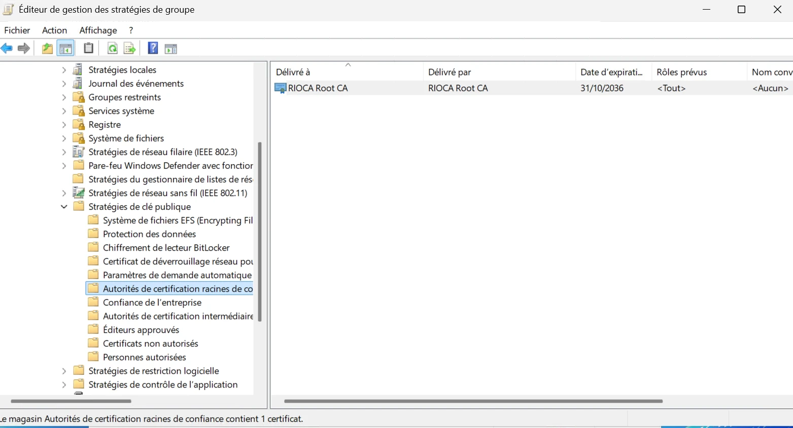

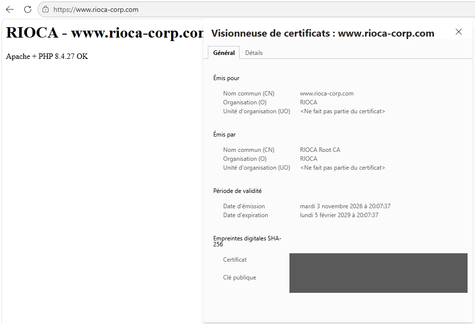
05HTTPS durci
Une fois le HTTPS en place, j'ai durci la configuration du site :
SSLProtocol -all +TLSv1.2 +TLSv1.3
SSLCipherSuite ECDHE-ECDSA-AES256-GCM-SHA384:ECDHE-RSA-AES256-GCM-SHA384:...
Header always set Strict-Transport-Security "max-age=63072000"
<Directory /var/www/rioca>
Options -Indexes
AllowOverride None
</Directory>
# Site du port 80
Redirect permanent / https://www.rioca-corp.com/- SSLProtocol n'accepte que TLS 1.2 et 1.3 : les versions plus anciennes ont des failles connues.
- Seules des suites de chiffrement fortes sont proposées (échange de clés ECDHE, chiffrement AES-GCM ou ChaCha20).
- L'en-tête HSTS demande au navigateur de ne revenir qu'en HTTPS pendant deux ans, et tout ce qui arrive en HTTP est redirigé (code 301).
- Options -Indexes empêche Apache d'afficher le contenu d'un dossier.
- Apache cache sa version (ServerTokens Prod, ServerSignature Off), et les modules inutiles (autoindex, status) sont désactivés.

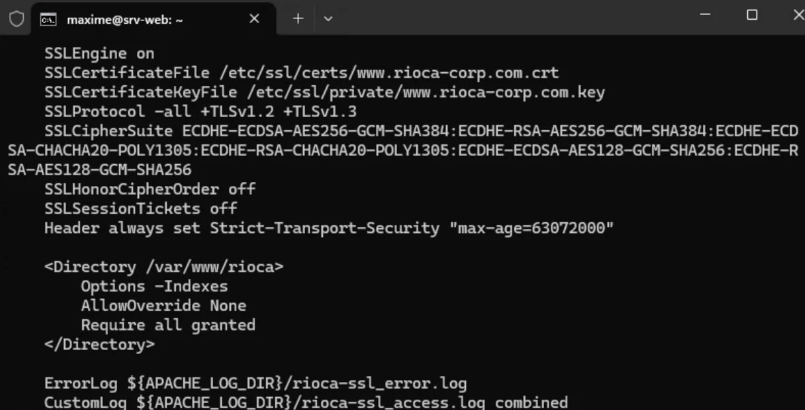

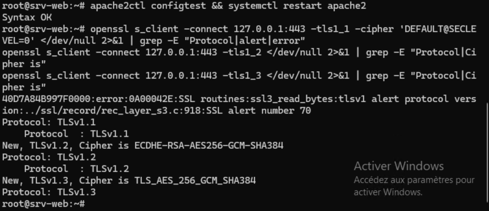

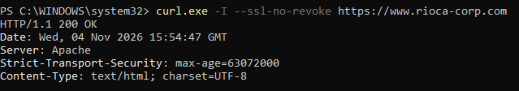
06Dépôt des fichiers en FTPS
Les développeurs déposent le site avec FileZilla. Le FTP classique envoie le mot de passe en clair : j'ai installé vsftpd en FTPS, c'est-à-dire du FTP chiffré par TLS, sur SRV-WEB1, pour que les fichiers arrivent directement dans le dossier du site. Extrait de la configuration :
anonymous_enable=NO
write_enable=YES
local_umask=002
userlist_enable=YES
userlist_deny=NO
chroot_local_user=YES
allow_writeable_chroot=YES
ssl_enable=YES
force_local_logins_ssl=YES
force_local_data_ssl=YES
rsa_cert_file=/etc/ssl/certs/vsftpd.crt
pasv_min_port=40000
pasv_max_port=40100- Pas de connexion anonyme, et une liste blanche : seul le compte des développeurs peut se connecter. Ce compte n'a pas de shell, il ne peut pas servir à ouvrir une session SSH.
- Le compte est enfermé (chroot) dans le dossier du site : il ne voit rien d'autre du serveur.
- Le chiffrement est obligatoire, pour l'identification comme pour les fichiers : une connexion en clair est refusée.
- Le mode passif utilise une plage de ports fixe, que l'on peut ouvrir précisément sur le pare-feu.

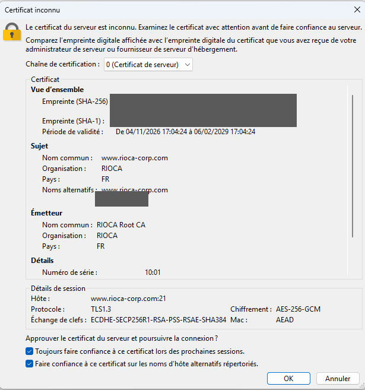

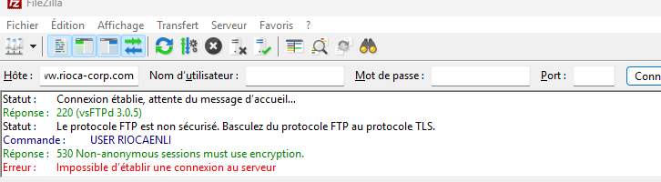
07Base de données
Mon binôme a installé MariaDB dans la DMZ interne et importé la base du site. Elle est protégée à trois niveaux :
- le pare-feu Zyxel n'autorise vers elle que SRV-WEB1, sur le port 3306 ;
- le pare-feu local du serveur (ufw) n'ouvre le port 3306 qu'à SRV-WEB1, plus SSH pour l'administration ;
- le compte utilisé par le site a tous les droits, mais sur sa seule base, et MariaDB ne l'accepte que s'il vient de SRV-WEB1.
Pendant mes tests de la base, un ancien compte utilisable depuis n'importe quelle adresse (hôte %) est apparu : je l'ai supprimé.

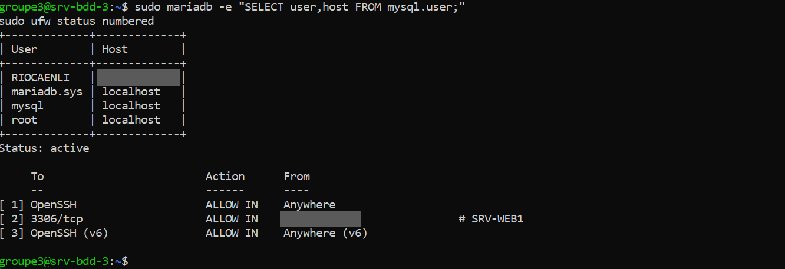
08Pare-feu : règles et audit
Le Zyxel applique la première règle qui correspond, et tout ce qui n'est pas autorisé tombe sur la règle par défaut, qui refuse et journalise. Les règles du projet :
| Règle | Flux | Action |
|---|---|---|
| Campus_vers_WebFTPS | Wi-Fi des développeurs vers SRV-WEB1 (HTTP, HTTPS, FTPS) | Autoriser |
| LAN_to_SRV-WEB1_FTPS | LAN vers SRV-WEB1 (FTP 21 et ports passifs) | Autoriser |
| DMZ_WEB_to_BDD | SRV-WEB1 vers la base (3306) | Autoriser |
| DMZINT_to_DMZWEB_Deny | DMZ interne vers SRV-WEB1 | Refuser |
| DMZINT_to_Internet | DMZ interne vers Internet (mises à jour, heure) | Autoriser |
| LAN_to_WebServ | LAN vers SRV-WEB1 (HTTP, HTTPS) | Autoriser |
| Isolation_DMZ_LAN | DMZ vers LAN | Refuser |
Un premier test a montré que la base pouvait joindre le serveur web, alors qu'aucune règle ne l'autorisait. J'ai donc relu la configuration du pare-feu et des routeurs : cet audit a révélé plusieurs problèmes.
| Problème trouvé | Risque | Correction |
|---|---|---|
| « Enable Policy Control » décoché | Aucune règle n'était appliquée : tout passait | Filtrage réactivé |
| Les deux DMZ dans la même zone du Zyxel | Le trafic entre elles n'était pas filtré : la base pouvait joindre le serveur web | Zone DMZ_INT créée pour la DMZ interne, et règle de refus |
| Base publiée sur le Wi-Fi du campus (NAT du port 3306 et règle associée) | Base joignable sans passer par le serveur web | NAT et règle supprimés |
| Objet FTPS du Zyxel sur le port TCP 990 au lieu de 21 | FTPS impossible depuis le Wi-Fi | Objet corrigé |
| Synchronisation de l'heure bloquée pour la DMZ interne | Serveur de base à l'heure fausse | NTP ajouté à la règle de sortie |

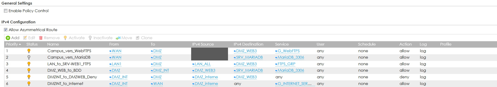

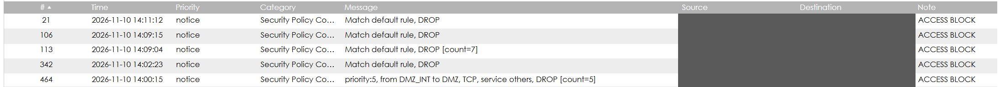
09Accès des développeurs
Les développeurs travaillent sur le Wi-Fi du campus, avec des PC hors du domaine. Le chemin quand l'un d'eux ouvre le site :
- Le DNS du campus lui donne l'adresse publiée du site.
- Le routeur Cisco traduit cette adresse vers SRV-WEB1 (NAT statique).
- Le Zyxel laisse passer grâce à la règle Campus_vers_WebFTPS.
- Le certificat est accepté, puisque le développeur a importé RIOCA Root CA.
Les postes du LAN, eux, interrogent le DNS du contrôleur de domaine, qui porte la zone rioca-corp.com : le nom donne directement l'adresse de SRV-WEB1 dans la DMZ. Le fichier hosts, utilisé au début, n'est plus nécessaire : je l'ai retiré des postes et du pack des développeurs.
Pour gérer leur base sans jamais la joindre directement, les développeurs passent par phpMyAdmin, installé sur SRV-WEB1 :
- à l'adresse /gestion-bdd plutôt que /phpmyadmin, la première adresse que testent les robots ;
- en HTTPS seulement, et uniquement depuis le LAN et le Wi-Fi des développeurs ;
- avec la connexion du compte root refusée : le compte du site ne voit que sa base.
Pour la mise en production, j'ai envoyé aux développeurs un pack : la procédure, le certificat racine et le script d'import. Chaque service (FTPS, base) a son propre mot de passe, transmis à part.

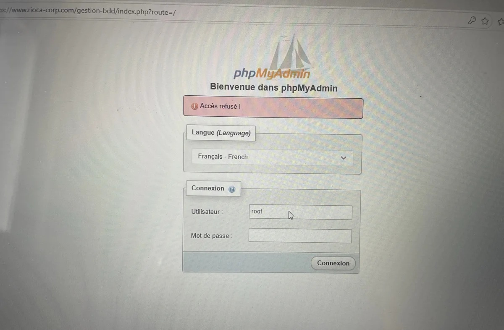
10Tests et bilan
J'ai rédigé le rapport de tests : chaque test donne la commande, le résultat attendu et une capture.
| Test | Résultat |
|---|---|
| Site en HTTPS sans alerte depuis un poste du domaine | Conforme |
| TLS 1.1 refusé, TLS 1.2 et 1.3 acceptés, HTTP redirigé vers HTTPS, HSTS présent | Conforme |
| Page PHP du serveur web connectée à la base | Conforme |
| Port 3306 depuis le LAN ou le Wi-Fi | Refusé, comme voulu |
| Base de données vers serveur web | Refusé et journalisé |
| DMZ vers LAN | Refusé et journalisé |
| FTPS depuis le Wi-Fi : connexion et dépôt d'un fichier, visible ensuite sur le site | Conforme |
| FTP sans chiffrement, ou avec un autre compte | Refusé (530) |
| phpMyAdmin : seule la base du site visible, root refusé, /phpmyadmin en 404 | Conforme |
| Résolution du nom depuis le LAN et le Wi-Fi | Conforme |
| Site des développeurs et connexion d'un utilisateur de leur base | Conforme |
Le test final réunit toute la chaîne : les développeurs ont déposé leur site en FTPS depuis le Wi-Fi. Depuis un poste du LAN, il s'affiche en HTTPS, et la connexion d'un utilisateur fonctionne, ce qui prouve que PHP lit bien la base.

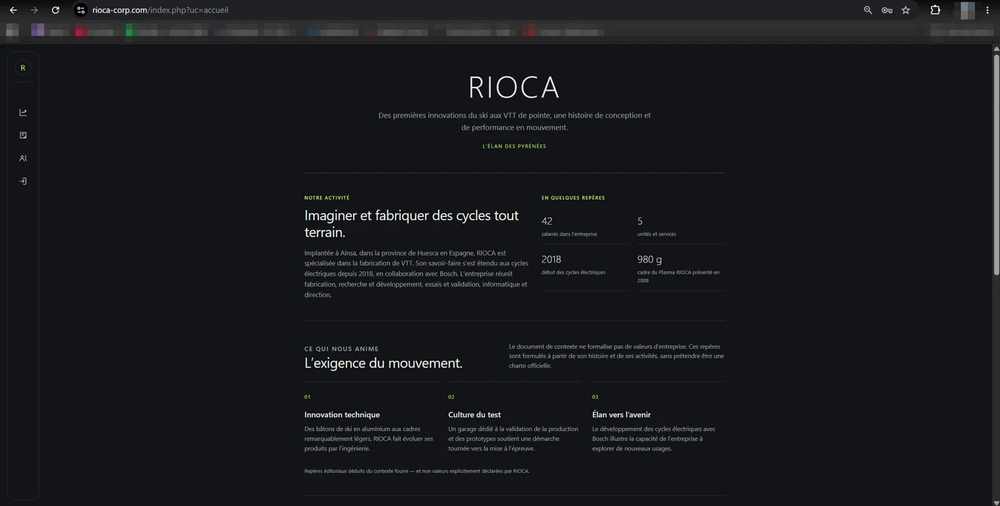
Deux problèmes sont apparus quand les développeurs ont commencé à travailler. En mode passif, vsftpd donnait son adresse interne, injoignable depuis le Wi-Fi : je l'ai réglé pour annoncer l'adresse publiée par le NAT. Ensuite, le refus de connexion qu'ils signalaient venait d'une confusion entre le mot de passe du FTPS et celui de la base.
Limites connues, notées dans la documentation :
- la liste des fichiers en FTPS ne fonctionne pas depuis le LAN, conséquence du réglage du mode passif : c'est assumé, le FTPS sert aux développeurs, qui sont sur le Wi-Fi ;
- l'autorité de certification ne publie pas de liste de révocation ;
- un seul serveur web : s'il tombe, le site et le FTPS tombent ensemble.
Ce que j'en retiens : une règle de pare-feu bien écrite ne protège rien si le filtrage est désactivé ou si deux zones sont confondues. Seuls les tests de refus, vérifiés dans le journal, le montrent.